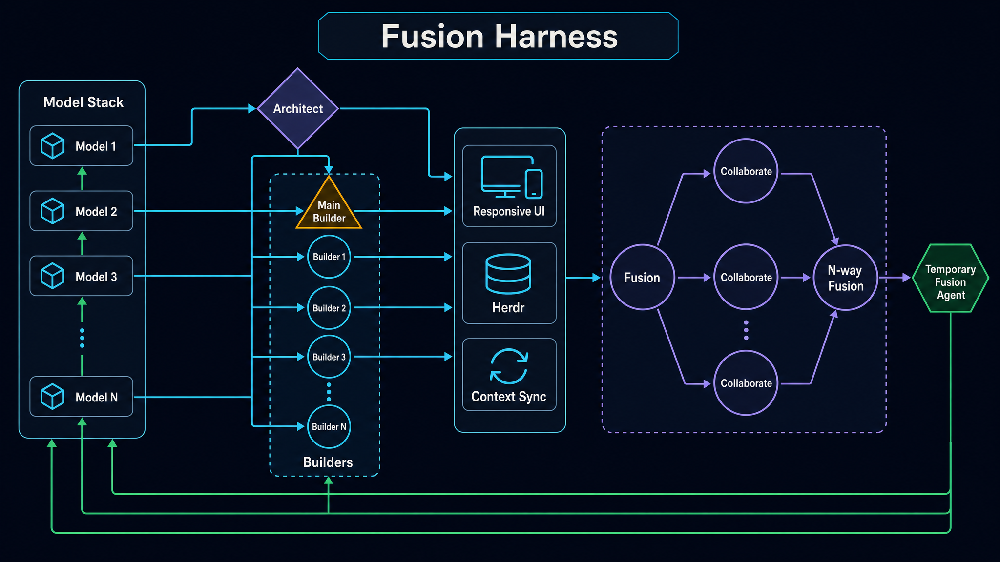
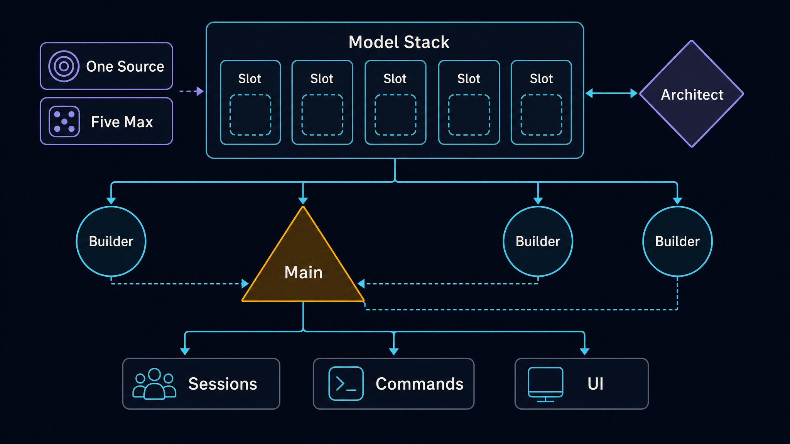
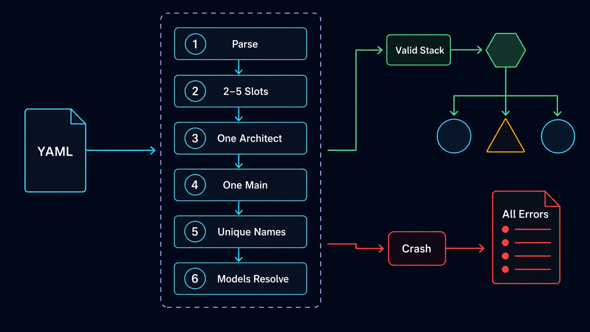
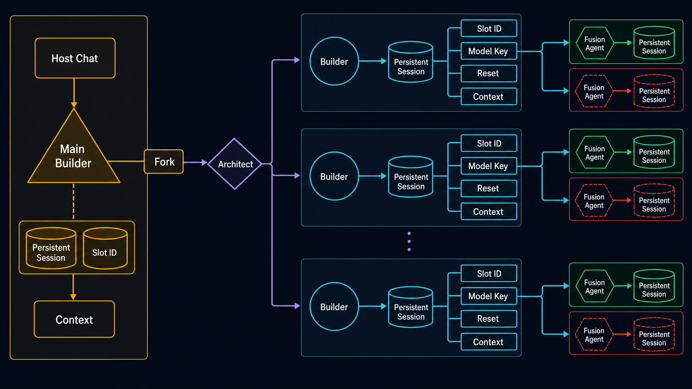
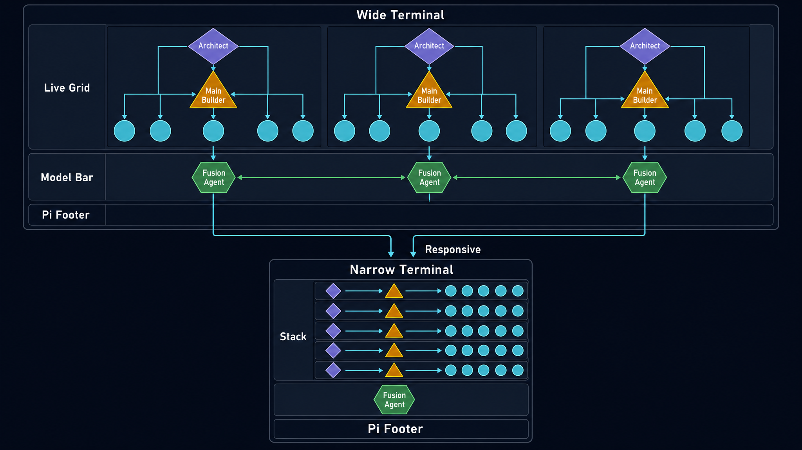
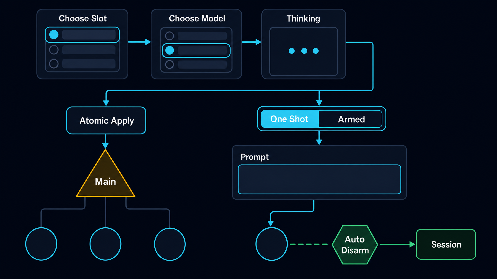
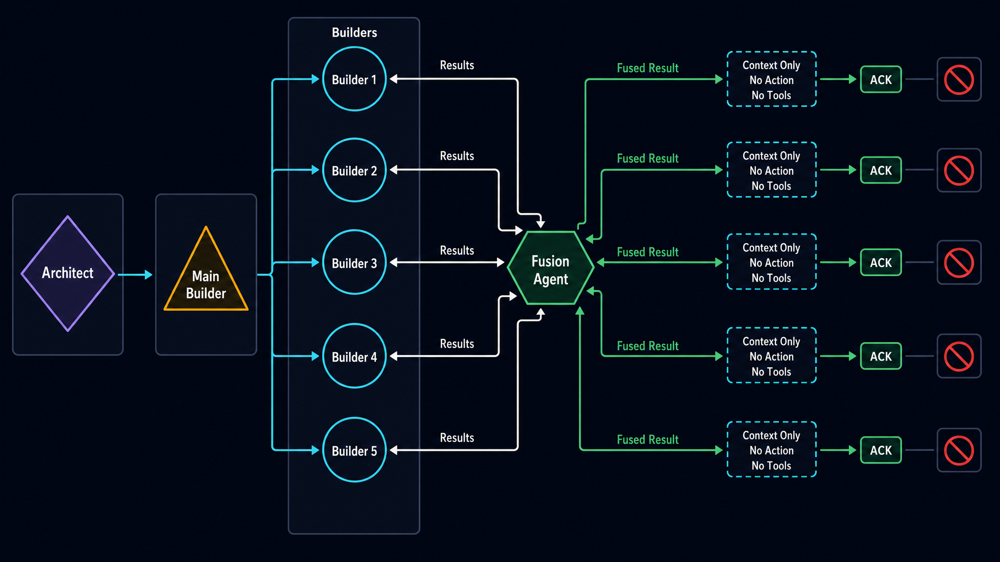
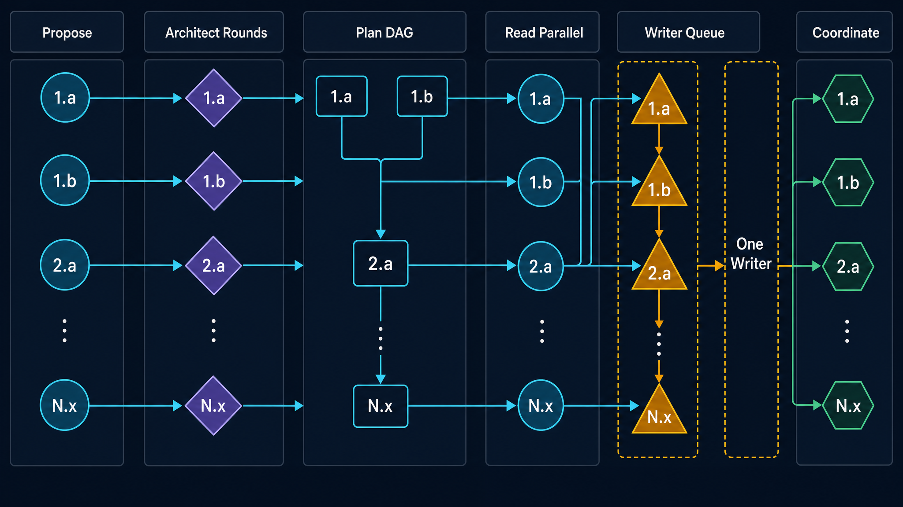
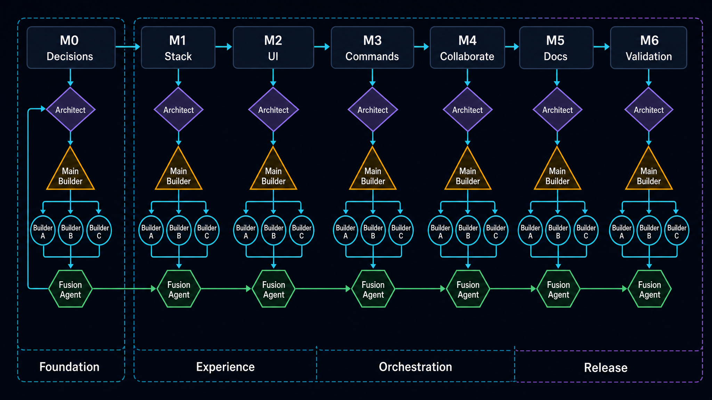
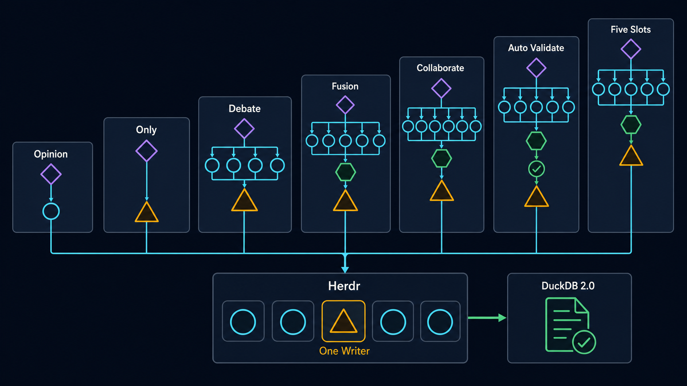

Fusion Harness Multi-Model Stack

0a0d61bfee20…10 generated diagramsImplementation map
Fused from: [ARCHITECT] anthropic/claude-fable-5 + [BUILDER] openai/gpt-5.6-sol Implementation baseline (source of truth): .../IndyDevDan/Documents/projects/experimental/fusion-harness/extensions/fusion-harness/ at harness commit 56d814f — fusion-harness.ts (3,464 lines), its local README.md/SPEC.md, prompt files, and .../IndyDevDan/Documents/projects/experimental/fusion-harness/justfile Sources: tmp/engineering-plan-ARCHITECT-anthropic-claude-fable-5.md, /tmp/fusion-harness-engineering-plan-BUILDER-openai-gpt-5.6-sol.md, plus direct audit of the running harness implementation above
0. Current-state grounding (corrected against the running harness)
All line references in this plan now refer to .../IndyDevDan/Documents/projects/experimental/fusion-harness/extensions/fusion-harness/fusion-harness.ts unless another path is shown.
| Area | Running implementation today | Evidence | |||
|---|---|---|---|---|---|
| Models | Two slots. ARCHITECT comes from --architect; BUILDER comes from explicit --builder, otherwise the host session's live model, otherwise the fallback. noteHost(ctx) refreshes it at session start and command entry. | :104-105, :1088-1157 | |||
| Roles | Closed union `ARCHITECT\ | BUILDER\ | FUSION\ | VALIDATOR`, fixed theme-token colors/glyphs. | :137-154 |
| Layout | TwoCol stacks below MIN_TWO_COL_WIDTH=100; FullWidth handles solo/fused rows. | :126, :410-462 | |||
| Model bar | Opt-in /fh telemetry is a two-cell belowEditor widget, deliberately not Pi's singleton footer. | :1429-1541, :2047-2068 | |||
| Sessions | Keyed `architect\ | builder + model`; architect is persistent and builder forks the host session when available. | :1267-1364 | ||
| Live state | liveRuns, sideOf(), and sideLast hardcode left/right. | :1233-1250 | |||
| Fusion | /fh-fusion has exactly two workers and one fresh FUSION session; duoBody() reads only indexes 0 and 1. | :834-864, :1582-1592, :2142-2322 | |||
| Multi-round | /fh-debate already implements parallel read-only openings/rebuttals/closings with no judge. /fh-collaborate already implements sequential, alternating, full-tool turns on one shared deliverable. | :3046-3200, :3206-3387 | |||
| Commands | Eleven registrations already use the fh- namespace: /fh, /fh-reset, /fh-thinking, /fh-system-prompt, /fh-fusion, /fh-auto-validate, /fh-opinion, /fh-both, /fh-debate, /fh-collaborate, /fh-fusion-only. | :2020-3458 | |||
| Existing verification | just fh-smoke covers opinion, both, fusion, debate, collaborate, and system-prompt; just fh-auto-validate-smoke covers the gate loop. | .../IndyDevDan/Documents/projects/experimental/fusion-harness/justfile:334-375 |
Baseline correction: there is no missing-command or branch blocker. /fh-both, /fh-thinking, /fh-debate, /fh-collaborate, and /fh-fusion all exist in the running source. The requested update deletes the real /fh-both and /fh-thinking, preserves the already-built debate flow, extends the existing /fh-fusion, replaces the existing two-agent sequential collaborate flow with the planned N-agent coordinated flow, and replaces /fh-fusion-only with /fh-only. The local running README/SPEC also need cleanup: they omit the registered /fh-fusion-only, and one justfile comment still says debate has a judge while the implementation correctly has none.
Hard-blocker status: none external. Implementation can start from this baseline; remaining questions are product/scheduling choices, not missing code.
1. Canonical model-stack domain [BUILDER shape, ARCHITECT constraints]

One validated object everything consumes:
type ModelSlot = {
id: string; // slug of name — session keys, artifact dirs
name: string; // unique display name, [A-Za-z0-9_-]+, ≤16 chars (model bar)
model: string; // fully-qualified provider/id
thinking: ThinkingLevel; // default "medium", aliases via resolveThinking()
color: HexColor; // actual validated CSS hex color: `#RRGGBB`
architect: boolean; // exactly ONE slot
primary: boolean; // the Main builder (raw chat target)
systemPrompt?: string; // inline text or path (same rule as roleSystemPrompt today)
};
type ModelStack = {
codename: string; // from filename model-stack-<codename>.yaml
configPath?: string;
slots: ModelSlot[];
architect: ModelSlot;
primaryBuilder: ModelSlot; // "Main"
builders: ModelSlot[];
};Keep orchestration stages (FUSION, VALIDATOR) distinct from configured slots [BUILDER]. Extend AgentRun/AgentStat/FhDetails.answers[] with slot (optional in the renderer so old persisted sessions still render — same back-compat pattern as the boot-message fallback at :1345-1347) [ARCHITECT].
Module split [BUILDER] — extract testable runtime-only modules under the running harness's extensions/fusion-harness/ directory (sibling imports already work; prompt files resolve via EXT_DIR, :773-786):
modules/model-stack.ts— YAML parse, validation, color assignment, runtime overridesmodules/agent-layout.ts— N-column layout + opt-in model-bar rowsmodules/collaboration-graph.ts— DAG validation + wave schedulingmodules/writer-lease.ts— atomic canonical-CWD writer exclusion across Pi processesfusion-harness.ts— pi integration + command orchestration
2. Config file + --fh-config

2.1 Format — .pi/fusion-harness/model-stack-<codename>.yaml
Top-level list of slots. Ship a tracked 3-model demo, model-stack-trio.yaml:
- name: fable
model: anthropic/claude-fable-5
thinking: xhigh
architect: true # exactly one slot
color: "#A78BFA" # explicit actual color; quote hex values in YAML
- name: sol
model: openai/gpt-5.6-sol
thinking: high
primary: true # the Main builder — who raw chat talks to
color: "#F59E0B"
- name: terra
model: openai/gpt-5.6-terra
thinking: medium
# color omitted → assigned from the allowlisted hex palette by stable hash
# system_prompt: ./prompts/terra-persona.md (path or inline text)2.2 Fatal validation — crash at extension load, ALL errors aggregated [both]
- File missing/unreadable/unparseable, or top-level not a list.
- Not exactly 1
architect: true(the task's explicit crash condition). - Slot count outside 2–5; zero non-architect builders.
- Duplicate names/IDs; malformed model (no
/); invalid thinking; orcolornot a quoted, six-digit#RRGGBBvalue. - Not exactly one non-architect builder with
primary: true;primaryon the architect is invalid. Missing or multiple Main builders crash. system_promptpath unreadable [BUILDER].- At
session_start: any configured model is unresolved/unauthenticated, or the host cannot switch to the primary builder → crash startup.
Error format: fusion-harness: model-stack config invalid (<path>): + one reason per line [ARCHITECT].
2.3 Legacy flags and the running one-flag contract
- No
--fh-config→ synthesize the current two-slot stack: ARCHITECT from
--architect; BUILDER from explicit --builder, otherwise noteHost(ctx)'s live host model, otherwise DEFAULT_BUILDER. This preserves the running harness's one-flag install exactly (:1088-1157).
--fh-configpresent + conflicting legacy model/thinking/system-prompt flags →
reject, don't silently merge [BUILDER].
- Keep
noteHost(ctx)for legacy mode and for detecting native host model switches;
config mode resolves slot models from the validated stack instead.
2.4 YAML parsing
Use the real yaml package (yaml@^2.9) and apply strict aggregated schema validation after parsing. Do not own a handwritten YAML subset.
2.5 Colors
color values are actual colors, not pi theme-token names. Accept and normalize only quoted six-digit CSS hex values ("#RRGGBB"). Fill omitted colors from an allowlisted hex palette (#22D3EE, #F59E0B, #A78BFA, #34D399, #F472B6) using a stable hash of codename + slot id [BUILDER] — "randomized-looking" per the task but identity-stable across restarts (demo footage stays consistent [ARCHITECT]). Keep assignments collision-free within a stack; default the ARCHITECT to #A78BFA when its color is omitted.
Add a small fgHex(color, text)/ANSI truecolor rendering helper (or the equivalent supported pi-tui API) for slot labels, grid headers, widgets, and model-bar rows. Do not pass configured hex strings to theme.fg(), which expects named theme tokens; non-slot orchestration chrome may continue using existing theme colors.
2.6 Launcher — preserve the running host-as-builder invariant
Host --model MUST equal the configured primary builder because raw chat is the Main builder. Do not add yq or a config-extraction helper: the running harness already has a one-flag launcher and refreshes the host model through noteHost(ctx).
- Add
just fh-stack CONFIG *ARGSbeside the existingjust fhrecipe; it passes
only --fh-config {{CONFIG}} plus caller args.
- On
session_start, resolve the configured Main model fromctx.modelRegistry, call
await pi.setModel(model) when the host differs, fail startup loudly if selection fails, then call noteHost(ctx) so builder forks and the model bar use the corrected host identity.
- In legacy mode, retain today's precedence and one-flag behavior unchanged.
Per-run artifact dirs get a stack.json snapshot so historical outputs stay attributable after /fh-model changes [BUILDER].
3. Sessions [both, BUILDER keying + ARCHITECT fork invariant]

- Key includes
<slot-id>, readable model tag, and a hash of the fullprovider/modelstring; project roots include a hash of the canonical full CWD. Provider/path suffixes and same-ending project paths cannot collide. Model swap mints a new session; swapping back resumes the previous model-specific session. - Primary builder keeps the existing fork-the-host path (
builderSpawn,
:1339-1364); architect + secondary builders use pinned persistent sessions.
/fh-resetand/newwipe every slot/model session + retained context bars.
4. N-agent UI

4.1 AgentGrid (generalize running TwoCol, :410-446)
colW = floor((width − gutterWidth × (N − 1)) / N)- If
colW < MIN_COL_WIDTH (≈34)→ single-column vertical stack, each block headed
by its slot label (3 cols need ~104 wide, 5 need ~174).
- Replace
TwoColwithAgentGrid; keep a temporary two-item wrapper only while
migrating call sites. liveColumn (:1392-1427) remains reusable after it becomes slot-aware.
- Render order everywhere: architect → Main builder → remaining builders in YAML order.
- Generalize ALL surfaces: live widget, final answer panels, error panels,
/fh-system-prompt, debate closing panels, collaboration boards, fusion source panels, and stats. Running duoBody() (:1582-1592) silently drops entries past two.
4.2 Opt-in /fh model bar — one row per slot (rewrite :1429-1541)
◆ ARCHITECT | claude-fable-5 (xhi) | [██--------] 18%
▲ BUILDER (Main) | gpt-5.6-sol (hi) | [█---------] 9%
▲ BUILDER | gpt-5.6-terra (med) | [----------] 0%- Preserve the running composability contract: this remains a
belowEditorwidget
toggled by /fh, not ctx.ui.setFooter(). Pi's footer is a singleton and must remain available to the rest of the harness stack.
- Replace the two-cell
TwoColmodel bar with one full-width row per configured slot.
(Main) keeps the live host-usage logic (:1475-1496); other slots use slotLast: Map<slotId, AgentRun> instead of sideLast. FUSION remains excluded from persistent slot context accounting (:1236-1250).
- Render ≤5 rows in actual configured hex colors via
fgHex(), clamp every row with
truncateToWidth, preserve the current off-by-default state, and update /fh's command index/toggle copy (:2031-2068).
5. /fh-model — slot picker (replaces running /fh-thinking)

Three-step ctx.ui.select() wizard (verify exact TUI API vs docs/tui.md; args fallback /fh-model <slot> <provider/id> <thinking> [ARCHITECT]):
- Choose slot —
◆ ARCHITECT · fable · claude-fable-5 (xhi),▲ BUILDER (Main) · sol · … - Choose model — from the model registry (the running model bar already resolves
context windows from it at :1443-1452), searchable.
- Choose thinking level — the seven levels already defined at
:1196-1228.
Apply atomically only after all three selections complete [BUILDER]. Effects: mutate in-memory slot; per-slot session key handles the new-brain mint automatically; refresh the /fh model bar. Runtime/session-only — never rewrite YAML until persistence semantics approved (Q11) [BUILDER].
Main-builder change calls pi.setModel() and pi.setThinkingLevel() before committing the runtime stack. If selection/auth fails, the picker reports the error and leaves both host and stack unchanged. Successful changes deliberately preserve Pi's native host transcript.
Delete the real /fh-thinking registration (:2070-2102) and replace its entry in COMMAND_INDEX with /fh-model.
6. /fh-only — direct line to any agent (replaces /fh-fusion-only, deleted)
Two entry forms:
/fh-only <slot> <prompt>— immediate: verbatim prompt, chosen slot's
persistent session, full tools, solo widget/panel, envelope-free [BUILDER].
/fh-only(no args) — armed one-send mode:- Slot picker.
- Store
oneShotTargetSlotId; show sub-widget above the editor
(ctx.ui.setWidget(…, { placement: "aboveEditor" })): ▶ ONE-SHOT → ▲ BUILDER · terra (gpt-5.6-terra, med) — /fh-only again on same slot to disarm
- Next plain prompt intercepted via
pi.on("input")returning
{ action: "handled" }. Pi's documented input lifecycle supports this directly: extension commands dispatch before input, so other slash commands do not consume the armed target.
- Re-invoking
/fh-onlybefore sending: same slot → disarm (task's
requirement); different slot → retarget.
- Clear armed mode in
finally— success or failure [BUILDER].
Rationale (task): raw chat = primary builder, so this is the only way to address a specific non-main agent.
7. /fh-fusion — extend the running command to fuse ALL model results (:2142-2322)

Single-writer contract: parallel fusion workers may inspect the project and reason, but they may never mutate the working directory. The temporary fresh-session FUSION agent is the only write-enabled process in this command and is solely responsible for applying the canonical fused result to the CWD.
- Fan the worker prompt to all N slots in parallel with strictly read-only project
tools (read,grep,find,ls; no bash/edit/write). The harness, not the workers, captures each response into its own run-dir artifact. USER_PROMPT_FUSION_WORKER.md gains {{SLOT}} + a roster and states explicitly: inspect/propose only, never modify the project, and do not claim implementation is complete.
- Save
agents/<slot-id>/answer.mdper agent under the unique/tmp/fusion-harness-*
run dir. Workers do not need identity-named project files because they cannot write to the project at all.
- The temporary FUSION agent (architect model, fresh session — preserving the running
design) receives a source manifest, runs after every worker has settled, and gets full tools. USER_PROMPT_FUSION_MERGE.md must say it is the sole CWD writer: merge the proposals, inspect current state, then implement/update the requested canonical deliverable itself. No other child with write tools may overlap it.
- Inline budget: total
HANDOFF_MAXdivided across sources — never
HANDOFF_MAX × N — with on-disk files as the complete record.
- Attribution tags become slot names:
[FABLE]/[SOL]/[TERRA]. - Failure policy — wait for every source to finish or fail, then fuse when ≥2 workers succeeded. Attribute every failure loudly and never start the sole-writer FUSION stage with fewer than two valid sources.
Update USER_PROMPT_OPINION.md and every read-only debate prompt with the same explicit no-mutation language. Enforce the policy with tool allowlists; prompts explain the contract but are not the security boundary.
Panel kind duo → multi (N columns via MultiCol).
7.1 Post-fusion context synchronization + acknowledgement (new requirement)
After the temporary, fresh-session FUSION agent combines every successful slot result, /fh-fusion MUST synchronize the complete fused result back into every configured model's active conversation context before the command is considered fully successful. This is a context handoff, not another work round: recipients must not re-run the task, inspect files, use tools, critique the merge, or extend it.
Required sequence:
- Persist the temporary FUSION agent's exact output to
fused.mdandfusion-context.md; never silently truncate or summarize it. If Main's visible panel limit is exceeded, retain the complete result as one visible ≤80KB head plus hidden ≤80KB continuation messages. - Fan out an acknowledgement-only turn to all configured slots. Use each non-Main
slot's persistent slot/model session. For the Main builder, append the fused context to the host session (so future raw chat retains it) and use a no-tools host fork for the immediate acknowledgement proof.
- Give acknowledgement turns no tools and send this explicit user-message
envelope, with the full fused result substituted verbatim:
CONTEXT SYNCHRONIZATION ONLY — DO NOT TAKE ACTION
A temporary FUSION agent has combined the configured models' results for run {{RUN_ID}}.
The content below is being added to your conversation context for future turns.
Do not analyze, critique, revise, implement, inspect files, run tools, or continue the task.
Acknowledge receipt only by replying exactly: ACK FUSION {{RUN_ID}}
<FUSED_RESULT>
{{FUSED_RESULT}}
</FUSED_RESULT>- Require the exact acknowledgement from every slot. Retry one failed/malformed
acknowledgement once with the same no-action envelope; after that, preserve and render the fused result but mark /fh-fusion context sync incomplete with loud per-slot attribution. A run is fully green only when every configured model has acknowledged.
- Save acknowledgement evidence as
acks/<slot-id>.mdand add per-slotcontextSync: acknowledged|failed, delivery route (persisted-host+fork-ack,host-memory+pinned-ack, or persistent slot), host chunk count, and fused-result content hash tosummary.json. Render a compact synchronization row after the fused panel; do not
display N redundant acknowledgement bodies.
- Treat any tool call during acknowledgement as a protocol failure. Tests must prove
every slot received the same full fused-result hash, all acknowledgements used the intended persistent/host context path, no acknowledgement turn invoked a tool, and future slot turns retain the synchronized result.
This post-fusion fan-out is deliberately different from another collaboration round: the temporary FUSION agent owns the merge, and configured models only acknowledge that the merged result is now shared context.
8. /fh-collaborate — propose → rounds → delegate → execute → coordinate

The running /fh-collaborate at :3206-3387 already proves the crucial safety primitive: ARCHITECT and BUILDER alternate full-tool turns and only one agent runs at a time. Generalize that command rather than discarding its sequencing model.
/fh-collaborate [--rounds N] <task> (new default 3 planning rounds) becomes a persisted N-agent state machine with artifacts under the run dir.
Runtime phase checklist
- Runtime Phase 1 — Propose (parallel, read-only)
- Send every slot
USER_PROMPT_COLLAB_PROPOSE.mdwith task, identity, and roster. - Enforce
read,grep,find,lsonly — no bash/edit/write. - Save every response to
collaborate/proposals/<slot-id>.md. - Render all proposal activity through the responsive AgentGrid.
- Runtime Phase 2 — Architect intake + N rounds (default 3)
- Resume the persistent ARCHITECT session and read all proposals/latest responses.
- Return one strict raw JSON directive object with read-only tools; the harness writes
collaborate/rounds/<n>/architect-directives.json. - Parse and validate the raw JSON before the harness persists it; never grant the coordinator a project-wide write tool.
- Fan packets out in parallel to persistent read-only slot sessions.
- Save revisions to
collaborate/rounds/<n>/<slot-id>.md. - Support an architect
CONVERGEDearly exit.
- Runtime Phase 3 — Produce and validate the delegation DAG
- Have ARCHITECT return a strict raw JSON plan with read-only tools; validate it, then let the harness write
plan.json. Assign work to every appropriate slot, including the architect. - Represent dependency-parallel groups (
1.a,1.b) and blocked groups (2.*) with explicitdepends_onedges. - Validate unique IDs, known assignees/dependencies, no cycles/self-dependencies, one active task per slot, and reachability.
- Reject conflicting ownership intent inside one dependency group.
- Reprompt with exact validation errors up to a fixed repair cap.
{ "tasks": [
{ "id": "1.a", "assignee": "sol", "description": "…", "depends_on": [], "outputs": ["…"] },
{ "id": "1.b", "assignee": "fable", "description": "…", "depends_on": [] },
{ "id": "2.a", "assignee": "terra", "description": "…", "depends_on": ["1.a","1.b"] } ] }- Runtime Phase 4 — Execute topological groups with one writer token
- Keep dependency-parallel group semantics while blocking later groups until all prerequisites complete.
- Allow read-only/artifact-only tasks to overlap.
- Put every bash/edit/write-capable task into one FIFO writer queue.
- Enforce exactly one full-tool child at any moment and hold an atomic CWD-scoped writer lease across execution/final integration so another harness process cannot write concurrently.
- Give each writer the original request, graph, upstream artifacts, latest shared-state handoff, ownership intent, and expected outputs.
- Require each writer to inspect current state, preserve previous work, and leave the next handoff.
- Render blocked, queued, reading, writing, and done states on the delegation board.
- Abort active descendants and clear the writer queue on Escape using
startStoppable(:1956-2004).
/fh-collaborate · executing group 1/2
● 1.a ▲ sol — implement AgentGrid ◐ writing 84s
◌ 1.b ◆ fable — write config loader queued (single-writer)
○ 2.a ▲ terra — integration pass blocked (group 2)- Runtime Phase 5 — Coordinate and synthesize
- Have ARCHITECT accept, request correction, or revise the remaining graph after each group.
- Revalidate every graph revision before scheduling it.
- Synthesize the final full-width result with provenance after all tasks complete.
- Record the graph, task handoffs, per-task stats, and writer-order evidence in
summary.json.
Concurrent-write safety — locked: no isolated worktrees and no concurrent writers. The scheduler enforces activeWriteChildren <= 1; an atomic CWD-scoped lease excludes other harness processes; children run in cancellable process groups; observed git worktree commands fail the run. Prompts prohibit background jobs and reinforce that each agent edits one shared deliverable, preserves prior work, and leaves a precise handoff. This is simpler and safer than trying to merge autonomous checkouts, and it is the product purpose of /fh-collaborate: let the configured agents work the problem out together through coordinated turns.
Replace the running two-agent USER_PROMPT_COLLABORATE.md with USER_PROMPT_COLLAB_{PROPOSE,INTAKE,ROUND,DELEGATE,EXECUTE,COORDINATE}.md. The EXECUTE prompt carries forward the running prompt's strongest language: one shared deliverable, only one writer is active, preserve partner changes, never restart from scratch, and leave the next slot a concrete handoff.
9. Command migration table (running commands → target)
| Running command | Action |
|---|---|
/fh | Keep the front door and model-bar toggle; update its index and render one model-bar row per slot. |
/fh-opinion | Keep; fan out read-only opinions across all configured slots. Remove bash so read-only is enforced. |
/fh-both | Delete the actual registration, USER_PROMPT_BOTH.md, docs, index entry, and smoke assertion. It violates the single-writer direction. |
/fh-thinking | Delete; /fh-model subsumes model + thinking selection. |
/fh-fusion | Keep the name; generalize its two read-only workers to N, then let only the temporary FUSION agent write (§7). |
/fh-debate | Generalize to N-way read-only debate: every later round gives each survivor every other clearly labeled prior opinion; agents may pick/change sides or form coalitions; render all closings with no judge. |
/fh-collaborate | Replace its two-agent alternating loop with the N-agent state machine while retaining its one-active-writer invariant (§8). |
/fh-fusion-only | Delete and replace with /fh-only (§6). |
/fh-auto-validate | Keep architect + Main behavior unless Q15 expands it. |
/fh-system-prompt | Generalize to every configured slot through AgentGrid. |
/fh-reset | Generalize from two role sessions to every slot/model session. |
All target commands are already correctly namespaced /fh-*; no alias or rename phase is required.
10. Implementation execution checklist

Every implementation phase and every task inside it is a checkbox. Check the phase only when all of its nested tasks and validation evidence are complete.
- Phase M0 — Lock product decisions
- Lock Q2:
/fh-debateis N-way and all-to-all between rounds. - Lock Q3: wait for all sources, then fuse with at least two successes.
- Lock Q4: require exactly one non-architect Main builder; never auto-promote.
- Lock Q6/Q8/Q9: real
yaml, explicit--fh-config, and crash on unavailable configured models. - Record decisions in this spec and the running extension's
SPEC.mdbefore implementation.
- Phase M1 — Build the model-stack foundation
- Add
ModelSlot,ModelStack,HexColor, and slot-aware run/stat/detail types. - Add
--fh-configand parse.pi/fusion-harness/model-stack-<codename>.yaml. - Aggregate and crash on all approved schema/invariant failures.
- Preserve the running one-flag legacy path when
--fh-configis absent. - Resolve explicit and stable-hash-assigned
#RRGGBBcolors; addfgHex()rendering. - Replace role/model session keys with
<slot-id>:<model-tag>keys. - Preserve the Main builder's host-fork path and pin every non-Main slot session.
- Add
stack.jsonsnapshots to every run artifact directory. - Add the tracked trio config and
just fh-stackwithoutyqor launcher extraction. - Add unit tests for valid/invalid 2-, 3-, and 5-slot stacks and session keys.
- Phase M2 — Generalize the TUI without taking over Pi's footer
- Replace
TwoColwith slot-awareAgentGridplus narrow-width vertical stacking. - Generalize live widgets, final panels, errors, debate closings, and system-prompt views.
- Replace
sideLastwithslotLastand preserve FUSION exclusion from persistent context bars. - Rewrite the opt-in
/fhbelowEditormodel bar as one row per slot with(Main). - Keep the model bar off by default and leave Pi's singleton footer untouched.
- Update
/fhcommand-index text and model-bar toggle behavior. - Add width tests from 40–300 columns and assert no rendered line exceeds its width.
- Phase M3 — Migrate commands and enforce the single-writer protocol
- Delete
/fh-both,USER_PROMPT_BOTH.md, its docs/index entry, and smoke assertion. - Replace
/fh-thinkingwith the atomic three-step/fh-modelpicker. - Replace
/fh-fusion-onlywith/fh-onlyimmediate and armed one-send modes. - Generalize
/fh-opinionto every slot with strictly read-only tools and prompts. - Generalize
/fh-fusionto N read-only workers and one late write-enabled temporary FUSION agent. - Add post-fusion full-result context synchronization, exact ACKs, retry, artifacts, and hashes.
- Generalize
/fh-system-prompt,/fh-reset, and all summaries to slot arrays. - Generalize
/fh-debateto N persistent slots, labeled all-to-all prior opinions, side changes/coalitions, survivor handling, and all closing opinions with no judge. - Add fake-runner tests proving no opinion/debate/fusion worker receives mutation tools.
- Add a test proving the FUSION agent is the only CWD writer during
/fh-fusion.
- Phase M4 — Generalize
/fh-collaboratearound one shared CWD - Replace the old prompt with PROPOSE, INTAKE, ROUND, DELEGATE, EXECUTE, and COORDINATE prompts.
- Implement parallel read-only proposals for every configured slot.
- Implement architect-directed rounds with file-based directives and optional convergence.
- Implement
plan.jsongeneration, schema validation, cycle checks, reachability, and repair cap. - Render the dependency-group delegation board with blocked, queued, reading, writing, and done states.
- Implement a FIFO single-writer token; never overlap write-enabled children.
- Let read-only/artifact-only tasks overlap while serializing all shared-CWD mutation.
- Pass the latest shared-state handoff to each writer and require preservation of prior work.
- Implement architect checkpoints that become downstream handoffs, keep the validated execution DAG fixed for v1, and perform final provenance synthesis.
- Clear active children and the writer queue on Escape.
- Add scheduler/lease tests asserting
maxConcurrentWriteEnabledChildren === 1, rejecting concurrent CWD leases, recording final/cancelled writer intervals, and observing zero worktree commands.
- Phase M5 — Update docs, examples, and validation assets
- Update the running extension's
README.mdandSPEC.mdfrom two-agent to model-stack terminology. - Correct stale docs: document
/fh-only; keep debate no-judge language consistent everywhere. - Update the root justfile recipes and command comments.
- Add
.pi/fusion-harness/demo configs and system-prompt examples. - Check in
prompts/duckdb/README.mdand all eight simple-to-complex DuckDB v2.0 prompts. - Update diagrams/screenshots where two fixed columns or footer ownership are shown.
- Verify every documented command, flag, artifact path, and prompt filename against code.
- Phase M6 — Validate from fake runners through Herdr
- Run parser, color, session, layout, command-registration, prompt-contract, context-sync, DAG, and concurrency tests.
- Run the commands represented by
just fh-smokeend-to-end using checked-in DuckDB prompts and Gemini 3.7 Flash. - Run the gate-first DuckDB migration-kit flow represented by
just fh-auto-validate-smokeon Gemini 3.7 Flash. - Run zero-spend crash fixtures for every config invariant.
- Run the DuckDB prompt suite in numeric order from simple to complex.
- Complete trio and five-slot Herdr runs, including narrow-pane stacking and Escape behavior.
- Verify actual DuckDB preview evidence or explicit honest
SKIPstatus for every executable lab. - Save the acceptance report with prompt names, pane IDs, artifacts, timings, model costs, and DuckDB capabilities.
- Close only the validation workspace and leave implementation artifacts intact.
Estimated diff ~1,200–1,600 lines across the split modules [ARCHITECT].
11. Test plan

Automated [BUILDER — adopted wholesale]
Malformed YAML + every invariant; valid 2/3/5-slot configs; deterministic colors; config-vs-legacy-flag conflicts; slot/model session keys; layout at widths 40–300 with no line wider than terminal; model-bar order + context source; N-source handoff budgeting; /fh-only state transitions; DAG validation/groups/repair cap; Escape cancellation. Add hard concurrency assertions: opinion/debate/fusion workers never receive mutation tools, only the temporary FUSION child may write during /fh-fusion, and maxConcurrentWriteEnabledChildren === 1 during /fh-collaborate. Refactor subprocess spawning behind a runner interface so orchestration tests use deterministic fake agents — no API spend.
Update the running just fh-smoke instead of creating a parallel smoke framework: remove /fh-both, retain /fh-debate, add trio-config assertions for N-way opinion and fusion/context ACKs, and assert the collaboration panel. Keep just fh-auto-validate-smoke as the gate-loop regression.
DuckDB v2.0 preview prompt suite — simple to complex
All live-agent validation prompts are checked in under .../IndyDevDan/Documents/projects/experimental/fusion-harness/prompts/duckdb/ and are loaded verbatim at test time. Do not invent ad-hoc paid-agent prompts in shell recipes or Herdr panes; zero-agent malformed-config fixtures are the only exception. The shared product subject is the DuckDB v2.0 “Cyanoptera” preview announcement: https://duckdb.org/2026/08/17/duckdb-20-highlights.
| Order | Prompt file | Complexity | Command/surface | DuckDB v2.0 focus | Harness proof |
|---|---|---|---|---|---|
| 1 | 01-simple-opinion.md | Simple | /fh-opinion | Choose the highest-leverage preview experiment | N-way read-only fan-out; no mutation tools |
| 2 | 02-simple-only-connect.md | Simple | Armed /fh-only | Quack/CONNECT and remote pushdown | Slot picker, one-send routing, auto-disarm |
| 3 | 03-medium-debate-server.md | Medium | /fh-debate --rounds 2 | Whether server mode changes DuckDB's production role | N-way all-to-all concrete opinions, side/coalition reasoning, all closings, no judge |
| 4 | 04-medium-fusion-sql-lab.md | Medium | /fh-fusion | VARIANT, triggers, DML-in-CTE, variables/JSON mutation | N read-only researchers; temporary FUSION is sole writer |
| 5 | 05-medium-fusion-context-sync.md | Medium | /fh-fusion | Adoption memo and preview risk register | Full fused result sent to every slot; exact no-tools ACKs |
| 6 | 06-complex-collaborate-preview-lab.md | Complex | /fh-collaborate --rounds 1 | Executable preview lab across SQL/parser/I/O features | Read-only parallel planning; serialized shared-CWD writers |
| 7 | 07-complex-auto-validate-migration-kit.md | Complex | /fh-auto-validate | Migration inventory and optional preview probes | Existing architect/Main gate-first behavior |
| 8 | 08-complex-five-slot-product-blueprint.md | Complex | Five-slot /fh-fusion | Server, VARIANT, async I/O, storage, C API extensions | Maximum stack, N-source attribution, one canonical writer, five ACKs |
The prompts require honest capability detection: when a DuckDB v2 preview binary is not available, agents must report SKIP/blocked evidence rather than fabricate execution. When it is available, the labs actually exercise preview SQL and separate observed results from article claims. prompts/duckdb/README.md is the canonical execution index.
Smoke recipes load files rather than embedding prose, for example:
PROMPT="$(cat prompts/duckdb/01-simple-opinion.md)"
pi ... --mode json -p "/fh-opinion $PROMPT"Herdr (herdr-global skill, fresh workspace) [ARCHITECT concrete steps + BUILDER rigor]
- Start from
.../IndyDevDan/Documents/projects/experimental/fusion-harness, then run
herdr status server || herdr server &; confirm flags via --help; herdr workspace create --cwd "$PWD" --label fh-multistack-validation --no-focus, and capture IDs from JSON. Use a dedicated implementation branch, but do not create per-agent worktrees.
- Crash panes (zero API spend):
just fh-stack tmp/bad-*.yamlfixtures — 0
architects, 2 architects, 6 slots, dup names, 2 primaries → assert non-zero exit + specific validator messages on screen.
- Boot: launch the trio config on cheap test models;
herdr waitsemantic-idle,
then READ the pane — idle alone is not proof. Run /fh on; assert 3 model-bar rows, (Main), distinct actual colors, and thinking tags.
- Picker + one-shot (simple): drive
/fh-model; assert model-bar and next-run
summary changes. Arm /fh-only, paste 02-simple-only-connect.md, assert routed slot + auto-disarm; re-arm the same slot and assert disarm without a send.
- Opinion (simple): load
01-simple-opinion.md; assert all configured slots
answer and zero child receives bash/edit/write.
- Debate (medium): load
03-medium-debate-server.md; assert one closing per configured slot, each round-2 prompt contains every other labeled round-1 opinion, sessions resume, agents may choose coalitions, there is no judge, and no mutation tools. - Fusion lab (medium): load
04-medium-fusion-sql-lab.md; assert N read-only
worker artifacts, exactly one write-enabled temporary FUSION run, no worker project mutation, canonical lab files, responsive panel, and slot attribution. Repeat with 05-medium-fusion-context-sync.md; assert one exact no-tools ACK per slot and the same full fused-result hash everywhere. Escape one run and verify attribution.
- Collaborate (complex): load
06-complex-collaborate-preview-lab.md; assert
plan.json, group 2 blocked until group 1 completes, read-only proposal timestamps may overlap, write-enabled execution timestamps never overlap, each writer sees the previous handoff, no worktrees are created, and the synthesis panel lands.
- Auto-validate (complex): load
07-complex-auto-validate-migration-kit.md;
assert architect/Main-only gate-first behavior and honest preview capability status.
- Five-slot maximum (complex): load
08-complex-five-slot-product-blueprint.md;
assert five source artifacts, one canonical writer, five context ACKs, and narrow pane single-column stacking.
- Save an acceptance report (
tmp/validation-report-<run>.md) with prompt filename,
pane IDs, commands, evidence, artifact paths, detected DuckDB version/capabilities, and API costs. Close only the created workspace.
12. Risks
- Host-model ≠ Main drift — config startup and
/fh-modelusepi.setModel(),
then noteHost(ctx) refreshes the running harness's builder identity; failure is loud.
- 5-way layout on narrow terminals — stacking is first-class; test at 80 cols.
- Fusion handoff blow-up at N=5 — budgeted excerpts + file pointers, followed by
full-result context synchronization with an explicit fit check.
- Accidental concurrent mutation — the highest-severity invariant. Tool allowlists
make opinion/debate/fusion workers and collaboration coordinators read-only; fusion has one late writer; collaborate has a scheduler token plus a cross-process CWD lease. Process-group cancellation and no-background-job contracts prevent surviving writers.
- Existing command regression — the running source already has
/fh, debate,
sequential collaborate, model-bar coexistence, and smoke recipes; preserve those contracts while changing their internals.
- Anthropic policy-classifier failures multiply with more Anthropic slots —
per-slot/model session keying isolates.
13. Questions (merged, deduped — walk through before M1)
Blocking product decisions (no external code blocker)
Q1 — Running baseline. RESOLVED. Implement in .../IndyDevDan/Documents/projects/experimental/fusion-harness/extensions/fusion-harness/ at/after commit 56d814f. The commands are present: delete real /fh-both and /fh-thinking, keep /fh-opinion, generalize /fh-debate to N-way all-to-all rounds, replace existing /fh-collaborate, extend existing /fh-fusion, and replace /fh-fusion-only.
Q2 — Debate participant scope. RESOLVED. /fh-debate is N-way. Round 1 collects independent concrete opinions; every later round gives each surviving slot every other slot's clearly labeled prior opinion. Agents may defend, change sides, form coalitions, synthesize positions, or remain a minority. All closings render; no judge or hidden merge.
Q3 — Fusion failure policy. RESOLVED. Wait for every source to finish or fail, then run the sole-writer FUSION stage when at least two sources succeeded. Attribute failures loudly. Preserve the fused result if context synchronization is incomplete.
Q4 — primary semantics. RESOLVED. primary exists only for builders. Exactly one non-architect slot must set primary: true; the architect may not. Missing/multiple Main builders crash startup—never auto-promote.
Q5 — Collaborate write model. RESOLVED. Agents may edit the shared CWD, but never concurrently. No isolated worktrees. Planning/review may fan out read-only; every write-enabled task is serialized by one writer token.
Design decisions — resolved
Q6 — YAML parsing. RESOLVED. Use the real yaml package and strict post-parse schema validation. No handwritten subset and no JSON config surface in v1.
Q7 — Launcher host model. RESOLVED. Add no yq or extraction helper. Config mode selects Main with pi.setModel() at startup and refreshes noteHost(ctx); legacy mode keeps the one-flag contract.
Q8 — Config discovery. RESOLVED. Explicit --fh-config only. No auto-discovery.
Q9 — Startup strictness. RESOLVED. Malformed config, unresolved model, missing configured auth, or failure to select Main crashes startup.
Q10 — /fh-model on Main. RESOLVED. Call pi.setModel() before committing the runtime stack. Preserve the native host transcript. On failure, leave host and stack unchanged.
Q11 — /fh-model persistence. RESOLVED. Session-only; never rewrite YAML.
Q12 — Colors. RESOLVED. Explicit values are actual quoted six-digit #RRGGBB; omitted colors use a stable hash of codename + slot ID from the allowlisted palette.
Q13 — Layout migration. RESOLVED. Use AgentGrid for N-agent surfaces. Retain TwoCol only for intrinsically pairwise legacy/auto-validation surfaces; it is not used to render N-agent results.
Q14 — Fusion handoff budget. RESOLVED. Split the existing total HANDOFF_MAX across sources and keep complete source artifacts on disk. Do not multiply the budget by N.
Scope / v1 cut-lines — resolved
Q15 — /fh-auto-validate. RESOLVED. Keep architect + Main only.
Q16 — Collaborate details. RESOLVED. Proposal and deliberation rounds are read-only. Architect intake uses its persistent slot session and does not issue itself a critique packet. The validated DAG remains fixed during v1 execution; architect checkpoints become downstream handoff context, and the final architect turn integrates with provenance.
Q17 — /fh-only. RESOLVED. Main selection is allowed. Immediate and armed text prompts ship in v1. Armed image routing remains unsupported with a loud warning and the target stays armed; skills/templates/steering/follow-ups are not silently expanded.
Q18 — Slot floor and demo. RESOLVED. Two slots remain valid. The tracked trio demo is fable (architect), sol (Main), and terra (secondary reviewer) with actual colors and a relative system-prompt example. Live acceptance uses all roles on google/gemini-3.7-flash at low thinking.